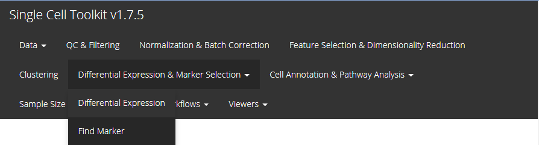

Entry of The Panel
From anywhere of the UI, the panel for marker finding can be accessed from the top navigation panel at the circled tab shown below.

The UI is constructed in a sidebar pattern. The sidebar is mainly for the parameters essential for running the marker finding algorithm. The main panel is mainly for demonstrating the results, including the marker table and the heatmap.
Main Panel - Result Table
The table is shown in the figure above. In this tab, there will be a table for all the markers detected and passed the filters. It is constructed with 5 columns, including “Gene” - the default feature identifiers (not necessarily a gene ID or symbol, depending on the background SCE object); “Log2_FC”, “Pvalue” and “FDR” - the statistics that supports the detection; and the fifth one that labels which cluster the marker is for, and the column name is exactly the “cluster annotation” selected in the sidebar. Users can also download the table in comma-splitted value (CSV) format, by clicking “Download Result Table” button.
Main Panel - Heatmap

For the heatmap visualization, we have another inside sidebar for its setting.
- Assay selection - selection input “Assay to plot”. User will select the expression data matrix here for the heatmap plotting. The UI will automatically make a selection basing on the selected one in the left side bar when “Find Marker” button is pressed, but users are allowed to change to another option.
- Cluster ordering - radio button “Order blocks by”. User will determine here whether to order the columns of the heatmap by the cluster name (i.e. annotation) or the size (i.e. number of cells). Checkbox “Decreasing”. Users can check this option for putting the alphabetically latter cluster or cluster with the largest size on the left.
- Top N marker cutoff - checkbox and numeric input “Plot Top N markers of each cluster”. If the checkbox is not checked, all markers passing the running filter (mentioned above) and plotting filters (will mention below) will be plotted. Otherwise checked, only the top
N markers, as N is the input numeric value in the numeric input below the checkbox, for each cluster will be plotted. The ranking is based on Log2FC value. When less than N markers are detected for one cluster, all of them will be plotted.
- Log2FC cutoff - numeric input “Plot Log2FC greater than”. The cutoff set here will rule out markers with absolute value of Log2FC (logged fold change) smaller than the cutoff from the plotting. This will not affect the result saved when running the algorithm.
- FDR cutoff - numeric input "". The cutoff set here will rule out markers with FDR (false discovery rate) value more than the cutoff from the plotting. Similarly, this will not affect the result saved when running the algorithm.
- Additional annotation - multiple selection input “Additional feature annotation” and “Additional cell annotation”. User can add up more cell or gene annotation to the heatmap lagend.